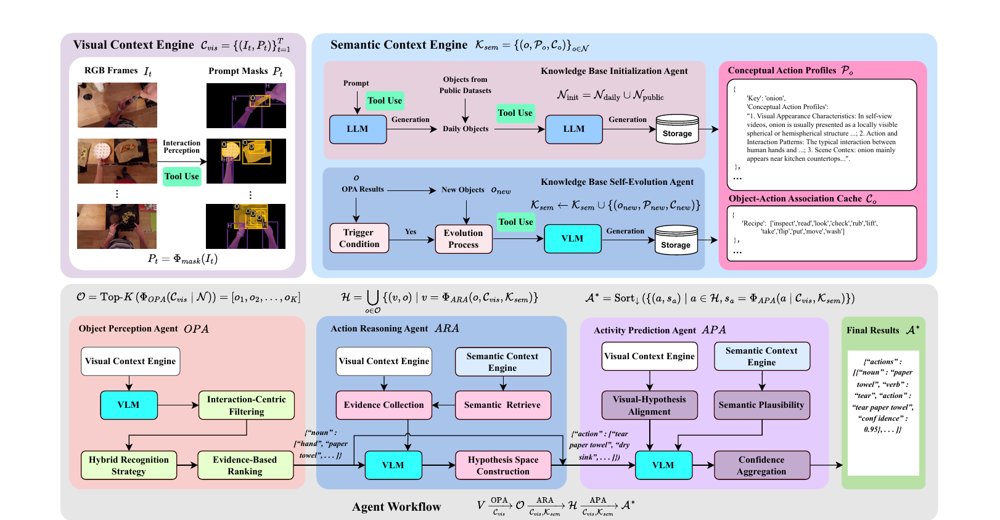
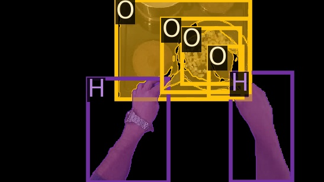

This page accompanies a manuscript currently under review at IEEE Transactions on Circuits and Systems for Video Technology. All results correspond to the submitted version and may change after revision.

Abstract
Open-world egocentric action recognition faces severe perceptual uncertainty and a combinatorial explosion of unseen action–object pairs. Traditional supervised models suffer from static knowledge frozen in parameters, which limits their generalization. We propose EgoDirector, a novel tuning-free agentic framework that reformulates action recognition as collaborative reasoning among specialized agents. EgoDirector is empowered by a Visual Context Engine for robust interaction modeling and a Self-Evolving Semantic Context Engine that dynamically constructs and assimilates knowledge for novel concepts on the fly. Under the strict L3 fully open-world setting, it achieves an average relative improvement of 139% over prior methods on GTEA Gaze, GTEA Gaze+ and EPIC-KITCHENS-100 using only lightweight open-source VLMs.
Method
EgoDirector decomposes open-world recognition into a progressive, knowledge-guided pipeline:
V —OPA→ O —ARA→ H
—APA→ A*
Visual Context Engine
Pairs raw frames with hand-object prompt masks; background is suppressed and hands/objects are explicitly labelled, mitigating perceptual uncertainty at a low token cost.
Self-Evolving Semantic Context Engine
Maintains conceptual action profiles plus an object–action association cache, and evolves on the fly when a novel object is triggered — lifelong adaptation without retraining.
Object Perception Agent
Interaction-centric filtering, hybrid recognition and evidence-based ranking produce a ranked object set.
Action Reasoning Agent
Infers the most plausible verb for each object from visual evidence and retrieved semantic priors.
Activity Prediction Agent
Scores hypotheses by visual alignment, semantic plausibility and confidence aggregation, and emits a ranked JSON list.

H) and manipulated objects (O) are explicitly
labelled while background regions are suppressed.
Results
Comparison with state of the art
EgoDirector is evaluated under the strict L3 fully open-world setting, while all baselines are reported under the easier L1 setting.
| Method | Publication | Object | Action | Activity | WUPS | Phrase |
|---|---|---|---|---|---|---|
| KGL | PRL 2022 | 5.12 | 8.04 | 6.58 | 35.83 | 0.30 |
| EgoVLP-Decomp | NeurIPS 2022 | 10.17 | 8.45 | 9.31 | 40.51 | 0.90 |
| LaViLa-Decomp | CVPR 2023 | 6.07 | 23.07 | 14.57 | 48.65 | 2.10 |
| ALGO | ECCV 2024 | 13.07 | 17.05 | 15.05 | 46.89 | 1.80 |
| ALGO + LaViLa | ECCV 2024 | 17.50 | 26.60 | 22.05 | 49.42 | 3.50 |
| EgoVLP + ProbRes | ICCV 2025 | – | – | 19.12 | 49.25 | 1.97 |
| LaViLa + ProbRes | ICCV 2025 | – | – | 33.80 | 53.34 | 8.98 |
| EgoDirector (Ours) | – | 27.27 | 55.11 | 41.19 | 64.94 | 14.96 |
| Method | Object | Action | Activity | WUPS | Phrase |
|---|---|---|---|---|---|
| LaViLa + ProbRes | – | – | 31.70 | 53.82 | 9.33 |
| Agent Workflow | 32.07 | 12.40 | 22.24 | 52.47 | 6.25 |
| + VCE | 32.51 | 18.15 | 25.33 | 52.49 | 8.36 |
| + VCE + SCE (full) | 33.32 | 49.79 | 41.56 | 58.93 | 23.45 |
Model-agnostic scalability (GTEA Gaze+, L3)
| Backbone | Object | Action | Activity | WUPS | Phrase |
|---|---|---|---|---|---|
| MiniCPM-V-4.6 | 25.90 | 38.42 | 32.16 | 47.76 | 15.85 |
| InternVL-3.5-8B | 33.72 | 45.62 | 39.66 | 51.93 | 21.48 |
| Gemma3-12B-it | 17.25 | 29.13 | 23.19 | 44.39 | 9.55 |
| Qwen3-VL-8B-Instruct (default) | 33.32 | 49.79 | 41.56 | 58.93 | 23.45 |
| Qwen3-VL-32B-Instruct | 35.45 | 51.53 | 43.49 | 59.72 | 24.67 |
Code & Usage
The reference implementation, prompt templates, the initial knowledge base and the efficiency benchmarks are available on GitHub. Everything runs against a local vLLM server; no training is involved.
git clone https://github.com/1781950192/EgoDirector.git conda create -n egodirector python=3.11 -y && conda activate egodirector pip install vllm pandas vllm serve <model_path> --served-model-name Qwen3-VL-8B-Instruct --port 8000 python main_egtea.py --num_frames 16 --use_hos 0 # GTEA Gaze+ python egtea_process/trans.py # accuracy evaluation
Supported benchmarks: GTEA Gaze (main_gtea.py), GTEA Gaze+ (main_egtea.py),
EPIC-KITCHENS-100 (main_ek100.py).
BibTeX
@unpublished{liu2026egodirector,
title = {EgoDirector: Self-Evolving Semantic Context Adaptation for
Scalable Open-World Egocentric Activity Recognition},
author = {Liu, Baolong and Xu, Guolong and Wang, Zihao and Guo, Tingting
and Tian, Yan and Dong, Jianfeng and Ma, Xi-Ao and Li, Chuanhuang},
note = {under review at IEEE Transactions on Circuits and Systems for Video Technology},
year = {2026}
}
The BibTeX entry will be updated once the manuscript is accepted.